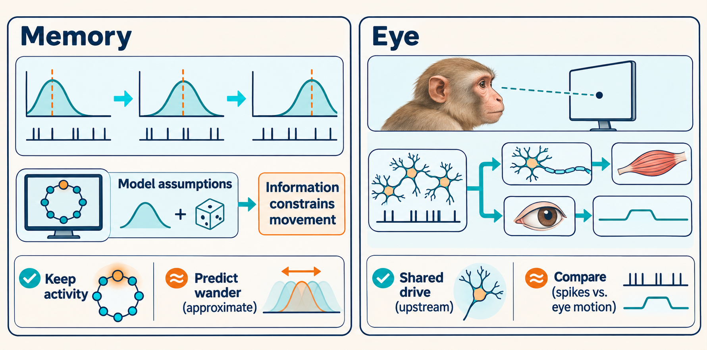
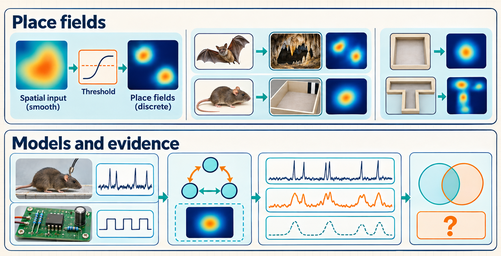

What the three papers establish
These neuroscience papers study memory, eye control, and navigation. Their settings are mathematical models of stored values, eye-movement and neural recordings from macaque monkeys, and recordings of location-dependent neural activity in rodents and bats. This reading guide explains each study’s question, methods, findings, and limits.
Unreviewed draft diagrams. These AI-generated images may contain incorrect or missing labels, arrows, formulas and numbers. Use the chapter text and paper links as the source for the explanation.


The subject is neuroscience: how groups of nerve cells represent information used in memory, eye control, and navigation. The three papers examine mathematical models that store a quantity such as an angle, eye movements and neural activity recorded in macaque monkeys, and location-dependent neural activity recorded in rodents and bats. They ask how activity can retain a value, how an internal fluctuation can move the eyes, and why a cell can respond at several separate locations.
Variable neural signals must support reliable behavior
A remembered direction must remain useful after its cue disappears. The eyes must hold an angle while an animal looks at a target. A moving animal must keep track of where it is. These tasks depend on groups of neurons, the brain’s signaling cells, whose electrical signals are brief and variable. Computational and systems neuroscience studies how these cells and their interactions support such behavior. Mathematical models connect assumptions about cells and their interactions to predictions. Recordings test those predictions against neural activity and movement.
Persistent activity can still lose memory accuracy
Burak and Fiete (2012) study short-term memory for a continuous quantity, such as a direction or eye angle. A proposed mechanism is that interacting neurons keep activity going after the original input ends. Yet the remembered value can change while the activity persists. The problem is to explain how the properties of the cells and their connections set the rate of this loss of accuracy.
The authors analyze a network with a continuous family of persistent activity patterns, each representing a different value. Each cell sends signals at random times. They use an approximation for small fluctuations to derive how these signals move the stored value, compare the calculation with network simulations, and relate the motion to the best accuracy possible when estimating the stored value from those signals.
Their central result is the lower bound \(D\ge 1/(2\tau^2J)\): uncertainty in reading the network’s current value limits how slowly that value can wander. Here \(D\) measures how quickly the represented value spreads, \(J\) is the internal spike information rate, and \(\tau\) is the synaptic decay time. Under the model’s assumptions, at short times near a chosen state the variance of memory displacement grows approximately as \(2Dt\), where \(t\) is elapsed storage time; boundaries can change that behavior over longer delays. Reading for longer also has diminishing benefit because the state continues moving during observation. This gives a benchmark for evaluating proposed memory circuits and their recall errors. It applies to the analyzed family of continuous-state memory models, with the required noise assumptions and no external signal anchoring the value. Chapters 3–6 develop the diffusion calculation, its long-delay behavior, the information bound, and the limits of readout.1
Eye drift points to a shared neural source
Even while gaze is held on a stationary target, the eyes move smoothly and irregularly between brief, rapid movements. This smooth motion is called fixational drift. It changes the image reaching the retina, the light-sensitive tissue at the back of the eye. Understanding its source is therefore part of understanding the visual signals the brain receives. Ben-Shushan and colleagues (2022) ask whether the motion begins mainly in muscles or in neural commands sent to them.
They reanalyze recordings from 57 neurons that send commands to eye muscles in two macaques, paired with precise eye-position measurements. They first calibrate the relation between each cell’s activity and larger eye movements. They then use it during fixation to compare the movement predicted from one cell with the measured movement. A separate circuit model tests whether a wandering stored eye-position command could explain the movement’s amplitude and time dependence.
For 350-millisecond intervals, their analysis estimates that about 82% of horizontal displacement variance comes from a common source before the final motor neurons, assuming the fitted movement relation also holds during fixation and the relevant noise contributions do not vary together. Writing \(Y\) for measured displacement and \(X\) for a single neuron’s displacement prediction, the estimated shared fraction of measured displacement variance is \(\chi\simeq\operatorname{Cov}(X,Y)/\operatorname{Var}(Y)\), after matching their calibrated gains. The reported \(0.82\pm0.07\) is the weighted estimate across cells, not an individual cell’s fraction. This supports a central neural contribution to drift. The memory-circuit model provides a possible explanation of that contribution, linking an internal storage error to observable behavior. The recordings do not uniquely locate the noise inside that memory circuit. Chapters 7–9 separate the shared-drive inference, the timing of drift, and the proposed circuit mechanism.2
Smooth random maps explain the variety of place fields
A place cell in the hippocampus, a brain region involved in memory and navigation, becomes more active in particular locations. Each connected region of elevated activity is a place field. Small environments encouraged a picture of one smooth field per cell. Larger environments reveal multiple fields with widely varying sizes and shapes. Mainali, Azeredo da Silveira, and Burak (2025) ask whether one statistical account can explain this variety across species and spatial dimensions.
Their model gives each cell a smooth, mean-centered random input \(h(x)\) at position \(x\) and firing rate \(F(x)=a[z(x)-q]_+\), where \(z(x)=h(x)/\sigma_h\), \(\sigma_h\) is the input standard deviation, \(q\) is a dimensionless threshold, \(a\) is a positive gain, and \([u]_+=\max(u,0)\). Activity is positive where the normalized input exceeds the threshold. The authors derive predictions for the resulting regions, simulate the model, and compare it with existing rodent and bat recordings from one-, two- and three-dimensional environments. Parameters fitted to field sizes and their spatial arrangement also support further tests of field shapes and connectedness.
The model explains different size distributions across dimensions and predicts additional features, such as multiple peaks within a field and inactive holes surrounded by activity. This makes irregular spatial responses quantitatively understandable and supports a common statistical description across the examined settings. Such statistics can arise when cells combine many inputs through largely random connections. The study does not directly measure those connections. Chapters 10–12 develop the spatial model, its size and shape predictions, and the tests and circuit interpretation. They distinguish exact predictions, limiting approximations and empirical comparisons.3
The three contributions therefore have different meanings: a mathematical constraint on memory models, evidence about the source of eye movement, and a statistical explanation of spatial activity. Together they show how a representation can be described, maintained and related to behavior. Combining all three in one biological circuit remains a further research question, developed in Chapter 13.
Electronic implementations make memory mechanisms testable
Part III asks how the neural memory mechanisms can be implemented in electronic circuits. The setting is neuromorphic computing, where engineered systems implement computations inspired by neural organization and dynamics. The chapters distinguish connection weights from changing neural states, explain how feedback affects retention, and examine selected hardware research through October 30, 2026. They end with a proposed experiment that separates systematic drift, random spreading, and readout error. This extension is a comparison of mechanisms and evidence. The original papers remain the foundation of Parts I and II.
Simulations separate the model from the evidence used to test it
Part IV follows the computational methods in Burak and Fiete (2012), Ben-Shushan et al. (2022), and Mainali et al. (2025). It distinguishes simulated neural trajectories, recorded-data analysis, and generated spatial maps. Each chapter identifies the model states, numerical procedure, measurements, available code, and limits on reproducing the published figures. The final chapter compares tools and explains resolution and repeatability checks. These are explanations of the sources, not a claim that the guide reran their full simulations.
Part introductions identify the paper behind each chapter’s result using author and year. Central marks a main finding of that paper. Supporting marks an analysis used to establish or qualify it. Background supplies needed concepts. Guide-derived marks expanded explanations, comparisons, or proposed tests developed here. A result can be central in its own paper while serving as supporting evidence in another argument.
Starting knowledge and reading paths
The guide assumes undergraduate calculus, basic probability, and linear algebra, including expected value, variance, standard deviation and probability density. Before Part I, the mathematical-tools chapter introduces the tools behind all three papers: neural feedback and information, covariance and filtering of eye signals, and spatial random fields with crossing and peak calculations. The later chapters develop the full derivations and the remaining tools in context.
- Before Part I: read the mathematical tools for all three papers, with optional folded calculations.
- Chapters 1–2: establish neural signals and variability, then persistence and accumulated error.
- Chapters 3–6: derive memory diffusion, its long-delay behavior, the information bound, and readout.
- Chapters 7–9: follow the eye study from shared-drive evidence through timing to a circuit model.
- Chapters 10–12: develop spatial maps, their size predictions, and tests of their shapes and possible origins.
- Chapter 13: connect the results and compare related work.
For a path focused on particular papers:
- Memory and eye drift: follow chapters 1 through 9 in order.
- Place fields: start with tuning curves, population codes, and rate maps, then variable spike counts, and fixed spatial maps versus values that change over time. Continue with chapters 10–12. This short route supplies the shared foundations without requiring the eye-mechanics or memory-readout calculations.
The Glossary gives short definitions for lookup after their first explanation. The References section gives full source details. The original paper figures are discussed by number and can be inspected in the linked PDFs.
After the foundations, the guide map shows the three paper questions together.
On a first reading, follow the main text, figures, assumptions, and results. The expandable notes preserve longer calculations and extensions. Open one when you want to check the steps behind a result. The explanations needed for the next section remain in the main text.
Neural mechanisms and mathematical derivations answer different questions
Chapters 3–6 explain how interacting neurons can retain a value while random spike timing changes it. Their treatment of the Burak and Fiete appendix separates three parts of each substantial topic:
- Neural mechanism: which cells and signals interact, what changes, and which features are assumptions of the model. For readout, this part also states what an observer can measure and which value it must estimate.
- Mathematical derivation: the general tool, its conditions, and the calculation after neural quantities are assigned to the symbols.
- Interpretation: what the result predicts about memory or readout, and what its assumptions leave unresolved.
An equation that specifies how a cell responds belongs to the model. A derivation works out what follows from that choice.
For example, a spike can disturb several cells’ activity. The circuit’s interactions remove some changes, while others leave the represented angle displaced. Linear algebra calculates which part survives. Probability gives the spread of that displacement. The result then predicts how quickly memory errors accumulate in this model. The mathematical tools also apply to other systems, but this neural prediction depends on the circuit and spike statistics used in the calculation.
The same distinction matters for readout. A calculation of the best possible estimate sets a benchmark under specified access to neural signals. Establishing that an animal’s neurons implement the assumed computation requires separate evidence.
For a first conceptual pass, read the mechanism, inspect the displayed result and its variables, then read the interpretation. Follow the mathematical derivation when you want to understand why the result holds or calculate with it. Assumptions remain part of both readings.
The PNAS appendix supplies both neural-model choices and mathematical arguments. This map links its seven sections to the guide’s explanations. Page links open the local copy. The guide sometimes uses an equivalent teaching derivation and identifies source inconsistencies beside the affected calculation.
| Appendix section | Neural question | Mathematical explanation in the guide |
|---|---|---|
| I: large-network limit, p. 1 | How can many variable spike inputs produce small fluctuations in total input? | Mean and variance scaling; Gaussian approximation |
| II: diffusion coefficient, p. 3 | Which changes in neural activity leave the stored value displaced? | Linearization and projection, diffusion, and systematic drift |
| III: motion along the attractor, p. 6 | How do memory errors grow over long delays or around an angular range? | Probability-density evolution and boundary conditions |
| IV: internal Fisher information, p. 9 | How well can nearby stored values be distinguished from their spikes? | Spike likelihood and information per unit time |
| V: information–diffusion inequality, p. 10 | How does uncertainty in the circuit’s own spikes constrain memory stability? | Scalar and matrix bounds, with equality conditions |
| VI: readout, p. 12 | How much does longer observation help when the stored value keeps moving? | Storage and readout error, equal weighting, ideal readout, and partial access |
| VII: model extensions, p. 17 | What changes when firing rates respond gradually or the noise law changes? | Two time scales and alternative noise statistics |
How to interpret the calculations and evidence
Examples chosen for the guide distinguish independent from shared fluctuations, complete from limited access to neural signals, and exact formulas from approximations for rare fields. Their numbers are checked separately from the published experimental measurements. A teaching reconstruction is labeled when its simplified model differs from the paper’s full model.
The guide explains how to interpret the experiments and their figures. It does not rerun the original animal recordings, data processing, or full neural-network simulations. A successful numerical check of a probability identity is different from an independent reproduction of a paper’s empirical result. Related work is selected to clarify the assumptions and alternatives rather than to claim an exhaustive literature search.
The following map is a guide-derived comparison of the source papers’ contributions. Read each paper’s column downward: the mathematical prediction, numerical comparison, and animal-data comparison answer different questions.456
| Step in the evidence | Burak and Fiete (2012) | Ben-Shushan et al. (2022) | Mainali et al. (2025) |
|---|---|---|---|
| Physical system and question | A proposed neural circuit maintaining a continuous value after a cue ends. How quickly does its accuracy deteriorate? | Motor-neuron activity and eye motion during macaque fixation. Where does the shared motion originate? | Place-cell responses in rodent and bat environments. Why do field sizes and shapes vary? |
| Actors, variables, and interactions | Fixed neural connections turn outgoing spike effects into new firing rates. Spikes renew activation and disturb the represented value. Connection-matrix explanation. | Two neural populations produce command \(E_{\mathrm{OI}}\). Motor spikes, muscles, and delayed feedback connect it to actual eye angle \(E\). The two angles are different signals. | Cell \(i\) receives smooth Gaussian input \(h_i(\mathbf x)\) at position \(\mathbf x\). Activity occurs above a threshold; the spatial map is fixed during analysis. |
| Derived prediction | Spike fluctuations produce memory diffusion. An information bound limits stability under the model assumptions. | Shared and private fluctuations imply displacement-covariance relations. Filtering a diffusing command predicts the time dependence of eye motion. | Covariance, threshold, and dimension determine field statistics, with exact results and high-threshold approximations kept separate. |
| Simulation comparison | Stochastic ring and two-population networks test theoretical memory diffusion. These are model tests, not animal-data validation. | A noisy integrator and motor pathway test whether the proposed mechanism can produce the observed motion and analysis results. | Generated spatial maps test analytical approximations and provide finite-threshold comparisons with recorded field statistics. |
| Empirical comparison | This study does not directly test the bound against animal recordings. | Paired single-neuron and eye recordings support a substantial shared source upstream of the final motor neurons, under the inference assumptions. | Existing rodent and bat recordings test field sizes, arrangements, shapes, and connectedness. Parameters fitted to summaries remain distinct from additional comparisons. |
| What remains unknown | Whether a biological memory circuit meets the assumptions or approaches the bound. | Whether the shared source is specifically the modeled integrator. A successful model does not uniquely locate it. | Which connections, learning rules, and dynamics generate the spatial inputs. A statistical fit does not establish a memory circuit. |
Throughout the guide, \(D\) denotes the diffusion coefficient, which sets how quickly uncertainty spreads. In the basic one-dimensional model, \(D\) is constant, neither direction is favored, and no boundary limits the motion. Its mean squared displacement (MSD), the average squared change in the represented coordinate after elapsed time \(t\), is \(2Dt\). Chapter 2 explains this model and its assumptions.
The other recurring symbols are:
- \(d\): spatial dimension.
- \(\theta\): the represented coordinate in the memory chapters.
- \(q\): the normalized threshold in the place-field chapters, called \(\theta\) in that paper.
- \(C\): the spatial covariance in the place-field chapters.
The original papers
The copies are the published versions. Supporting information is linked separately.
- Burak and Fiete (2012): Paper PDF and 20-page supporting information PDF. Fundamental limits on persistent activity in networks of noisy neurons. PNAS, 109(43), 17645–17650. Published DOI. The local main PDF uses the six-page Early Edition layout, so PDF page locators run from 1 to 6.
- Ben-Shushan, Shaham, Joshua, and Burak (2022): Paper PDF, supplementary notes and figures PDF, and open peer review PDF. Fixational drift is driven by diffusive dynamics in central neural circuitry. Nature Communications, 13, 1697. Published DOI. Ben-Shushan and Shaham contributed equally.
- Mainali, Azeredo da Silveira, and Burak (2025): Paper and STAR Methods PDF and supplementary figures and Methods S1–S4 PDF. Universal statistics of hippocampal place fields across species and dimensionalities. Neuron, 113(7), 1110–1120.e3. Published DOI. The main PDF has a cover before the article. Guide citations distinguish printed and PDF page numbers when needed.
The supporting-information copies preserve their original formulas. The guide identifies apparent inconsistencies in several printed intermediate equations beside the affected calculations and follows an explicitly shown derivation. Such observations are independent mathematical checks, not author-confirmed corrections.
Burak, Y., and Fiete, I. R. (2012). Fundamental limits on persistent activity in networks of noisy neurons. Proceedings of the National Academy of Sciences, 109(43), 17645–17650. DOI. Abstract and Introduction, PDF p. 1; Results, Eqs. 1–5 and Figs. 1–3, PDF pp. 2–4; Discussion, PDF p. 5. The readout duration follows the recall cue and is distinct from the preceding storage delay. ↩︎
Ben-Shushan, N., Shaham, N., Joshua, M., and Burak, Y. (2022). Fixational drift is driven by diffusive dynamics in central neural circuitry. Nature Communications, 13, 1697. DOI. Introduction, pp. 1–2; Figs. 1–3 and the common-variance estimate, pp. 2–6; model and Discussion, Figs. 4–5, pp. 7–9; Methods, Eqs. 11–16. The quoted 82% is an inferred common upstream contribution, not a direct recording from the proposed memory circuit. ↩︎
Mainali, N., Azeredo da Silveira, R., and Burak, Y. (2025). Universal statistics of hippocampal place fields across species and dimensionalities. Neuron, 113(7), 1110–1120.e3. DOI. Introduction and model, journal pp. 1110–1112; field sizes and shape tests, Figs. 1–3, pp. 1112–1116; Discussion, pp. 1117–1118. Some firing-rate comparisons also fit a scale converting model output into firing rate. The wiring interpretation is a proposed explanation rather than a connectivity measurement. ↩︎
Burak, Y., and Fiete, I. R. (2012). Fundamental limits on persistent activity in networks of noisy neurons. Proceedings of the National Academy of Sciences, 109(43), 17645–17650. DOI. Abstract and Introduction, PDF p. 1; Results, Eqs. 1–5 and Figs. 1–3, PDF pp. 2–4; Discussion, PDF p. 5. The readout duration follows the recall cue and is distinct from the preceding storage delay. ↩︎
Ben-Shushan, N., Shaham, N., Joshua, M., and Burak, Y. (2022). Fixational drift is driven by diffusive dynamics in central neural circuitry. Nature Communications, 13, 1697. DOI. Introduction, pp. 1–2; Figs. 1–3 and the common-variance estimate, pp. 2–6; model and Discussion, Figs. 4–5, pp. 7–9; Methods, Eqs. 11–16. The quoted 82% is an inferred common upstream contribution, not a direct recording from the proposed memory circuit. ↩︎
Mainali, N., Azeredo da Silveira, R., and Burak, Y. (2025). Universal statistics of hippocampal place fields across species and dimensionalities. Neuron, 113(7), 1110–1120.e3. DOI. Introduction and model, journal pp. 1110–1112; field sizes and shape tests, Figs. 1–3, pp. 1112–1116; Discussion, pp. 1117–1118. Some firing-rate comparisons also fit a scale converting model output into firing rate. The wiring interpretation is a proposed explanation rather than a connectivity measurement. ↩︎